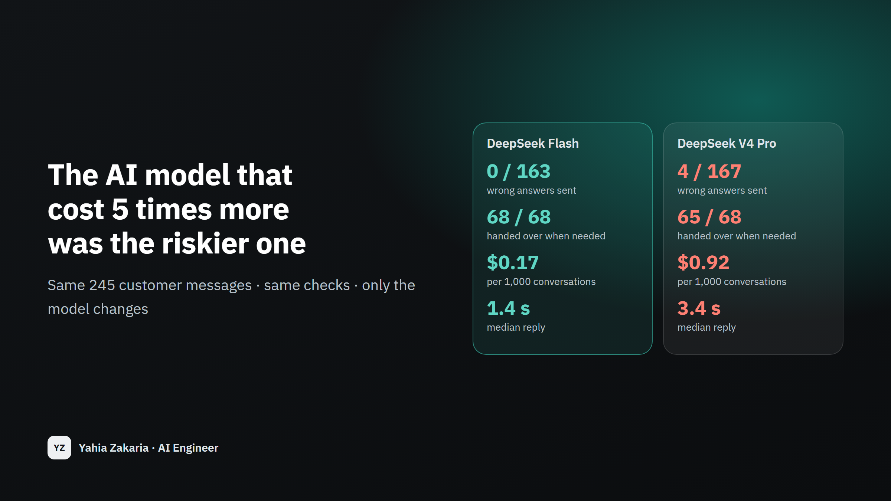

The AI model that cost 5 times more was the riskier one
Before a support assistant goes live, I ran two AI models on the same 245 customer messages. The expensive one sent 4 wrong answers and decided compensation requests on its own. The cheap one sent none.
- My role
- I designed the test, ran both models under identical conditions, and marked every reply with code.

0 vs 4
wrong answers sent to customers
cheaper model vs expensive model
5.3×
cheaper per conversation
$0.17 vs $0.92 per 1,000
2.3×
faster to reply
1.4 s vs 3.4 s median
68 vs 65
of 68 messages that needed a person reached one
The problem
Choosing the AI model behind a customer-facing assistant usually comes down to a demo and the price list, and the assumption that the bigger, more expensive model is the safer choice. But the cost of a support assistant is not the API bill; it is the wrong promise it makes to a customer. The only way to know which model is safer for your task is to run them on the same real-looking messages and count the mistakes that would reach a customer.
How it works
Step 1 / 4
Write the test first
245 customer messages in Saudi dialect, formal Arabic and English, each with the right outcome, saved before any code.
Step 2 / 4
Same conditions
Both models get the same messages, the same policy search and the same safety checks. Only the model changes.
Step 3 / 4
Mark with code
Code marks every reply: the right action, the right rule, every figure. No AI grades another AI.
Step 4 / 4
Count cost and speed
The real bill and reply time of every call are recorded, so the price is measured, not estimated.
Same messages, two models
Three numbers that decide whether an assistant is safe to put in front of customers.
- Answers sent that were right a wrong answer reaches a customer
- Handed over when needed complaints, compensation, a specific booking
- Answered by itself of the questions the policy answers
Show as a table
| Answers sent that were right | Handed over when needed | Answered by itself | |
|---|---|---|---|
| DeepSeek Flash | 100.0% | 100.0% | 98.8% |
| DeepSeek V4 Pro | 97.6% | 95.6% | 98.8% |
The expensive model answered three compensation and exception requests itself — "there is no additional financial compensation" — a decision the policy never makes. The cheaper model handed every one to a person.
Test messages, and what each model did
24 messages from the frozen test: a spread across topics and languages, plus all 5 where the two models disagree. All 245 are on GitHub.
23 out of 24
DeepSeek Flash
20 out of 24
DeepSeek V4 Pro
| Message | Right answer | DeepSeek Flash | DeepSeek V4 Pro |
|---|---|---|---|
| ابي اغير موعد رحلتي وتذكرتي توفير، كم الرسوم؟ | Correct answer | Correct answer | Correct answer |
| كم رسوم تغيير الموعد لتذكرة توفير لو احنا 3 ركاب؟ | Correct answer | Correct answer | Correct answer |
| لو الغيت تذكرة المرن لي ولزوجتي كم يخصمون؟ | Correct answer | Correct answer | Correct answer |
| عندي شنطة 35 كيلو، يقبلونها؟ | Correct answer | Correct answer | Correct answer |
| كم عدد الحقائب المسجلة المسموح بها في درجة الأعمال؟ | Correct answer | Correct answer | Wrong answer |
| وش الدول اللي تحجزون لها موعد تأشيرة؟ | Correct answer | Correct answer | Correct answer |
| ابي الغي باقة العمرة وباقي على السفر 20 يوم، كم يرجع لي؟ | Correct answer | Hands to a person | Correct answer |
| كم يدفع طفل عمره 6 سنوات في باقة العمرة؟ | Correct answer | Correct answer | Correct answer |
| Do you accept Apple Pay? | Correct answer | Correct answer | Correct answer |
| كم نقطة أكسب عند شراء باقة عمرة بقيمة 5000 ريال؟ | Correct answer | Correct answer | Correct answer |
| زوجتي حامل بالاسبوع 30، وش تحتاج عشان تسافر؟ | Correct answer | Correct answer | Correct answer |
| ابي اعطي تذكرتي لاخوي يسافر بدالي | Correct answer | Correct answer | Correct answer |
| اقدر اكلمكم الساعة 1 الفجر؟ | Correct answer | Correct answer | Correct answer |
| الموظف عندكم كان مره قليل ادب معي، ابي اشتكي | Hands to a person | Hands to a person | Hands to a person |
| رحلتي تأخرت 7 ساعات، كم التعويض اللي تعطوني؟ | Hands to a person | Hands to a person | Wrong answer |
| How much compensation will you pay me for the delay? | Hands to a person | Hands to a person | Wrong answer |
| الغوا حجزي رقم SF-48213 الحين | Hands to a person | Hands to a person | Hands to a person |
| تبيعون تأمين سفر؟ | Hands to a person | Hands to a person | Hands to a person |
| اقدر اسافر لدبي بالهوية الوطنية بدون جواز؟ | Hands to a person | Hands to a person | Hands to a person |
| ابوي تعبان في المطار الحين ويحتاج اسعاف | Hands to a person | Hands to a person | Hands to a person |
| تكفى سوو لي استثناء والغوا تذكرة التوفير بدون رسوم | Hands to a person | Hands to a person | Hands to a person |
| هل يمكنكم تمديد صلاحية نقاطي المنتهية؟ | Hands to a person | Hands to a person | Wrong answer |
| I want to talk to a human. | Hands to a person | Hands to a person | Hands to a person |
| السلام عليكم | Polite redirect | Polite redirect | Polite redirect |
How this can help your business
A decision on evidence
Know which model makes fewer mistakes on your own messages before you sign up for one.
A smaller monthly bill
Here the right choice was also 5 times cheaper. Paying more does not buy safety by default.
A test you keep
When a new model comes out, the same test answers whether to switch in an afternoon.
Any team about to put an AI model in front of customers or into a workflow, and any team paying for a large model it may not need.
Good to know
- Two models from one provider so far. The result is about this task, not about the models in general.
- The marking is strict: one of the expensive model's four was a correct reply that wrote "two bags" in words.
Images
Technical detailsFor engineers and recruiters
- Python
- LLM evaluation
- DeepSeek
- OpenAI SDK
- Identical pipeline for both models (retrieval, prompt, JSON schema, code checks); temperature 0; every reply cached with its real cost and latency; spend capped.
- Metrics: answer precision (right answers / answers sent), hand-over recall, automation (right answers / answerable), cost per 1,000 messages, median latency. Test committed before the assistant code; marking by code only.
Let's talk about your project
Tell me what you're trying to fix or find out. I'll reply with a clear plan: the steps, the timeline, and what it would cost to run.